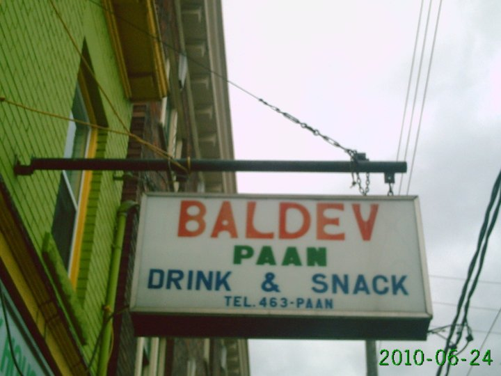
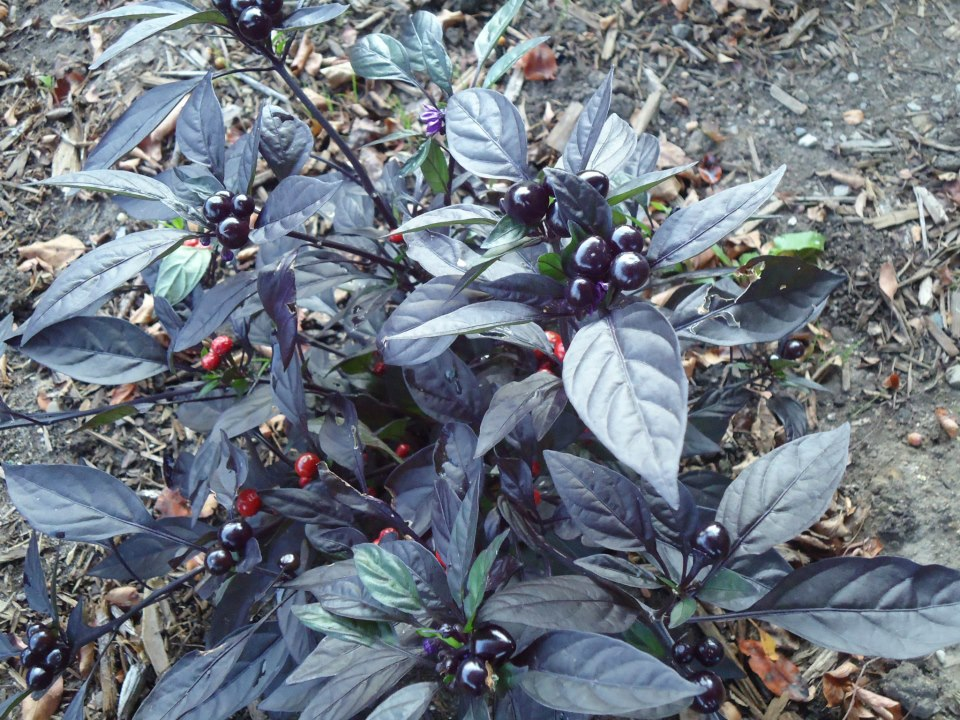

About Shan
I am a Senior at Michigan State University studying in Media and Information Technology. I came to MSU wanting to become Engineer. After taking courses in different Engineering decipline I finally found my passion in working for IT department to help users in their day to day job. I am glad I switched my major to Media and Information which has provided me with skills that I can apply in many different career path.
Gardening is something I have picked upon from my neighbors seeing them every year plant and grow flowers as well as vegetables right in their backyard. My summer hobby has become somewhat of staying outdoors and planting different trees. Its always nice to work outside and planting is the best way to involve family to do things outdoors.
Trips
My Garden
Contact
Shan Shah
Email: shahshan@msu.edu